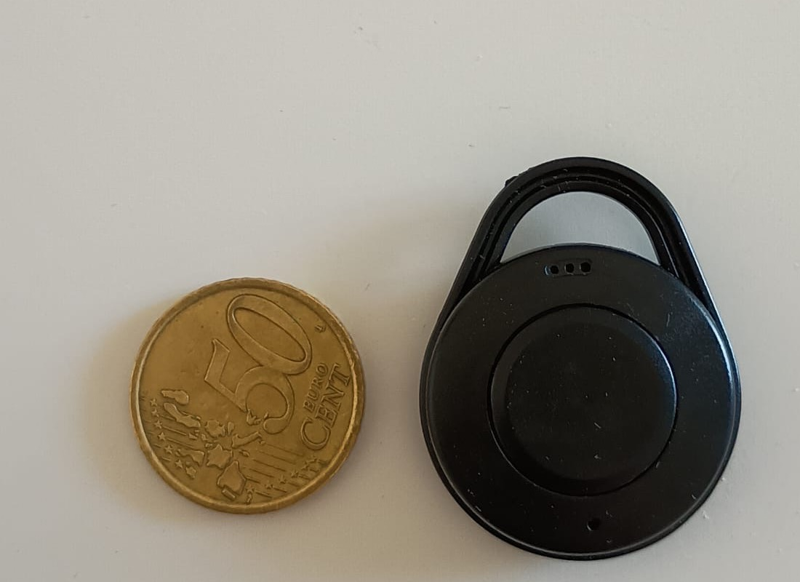
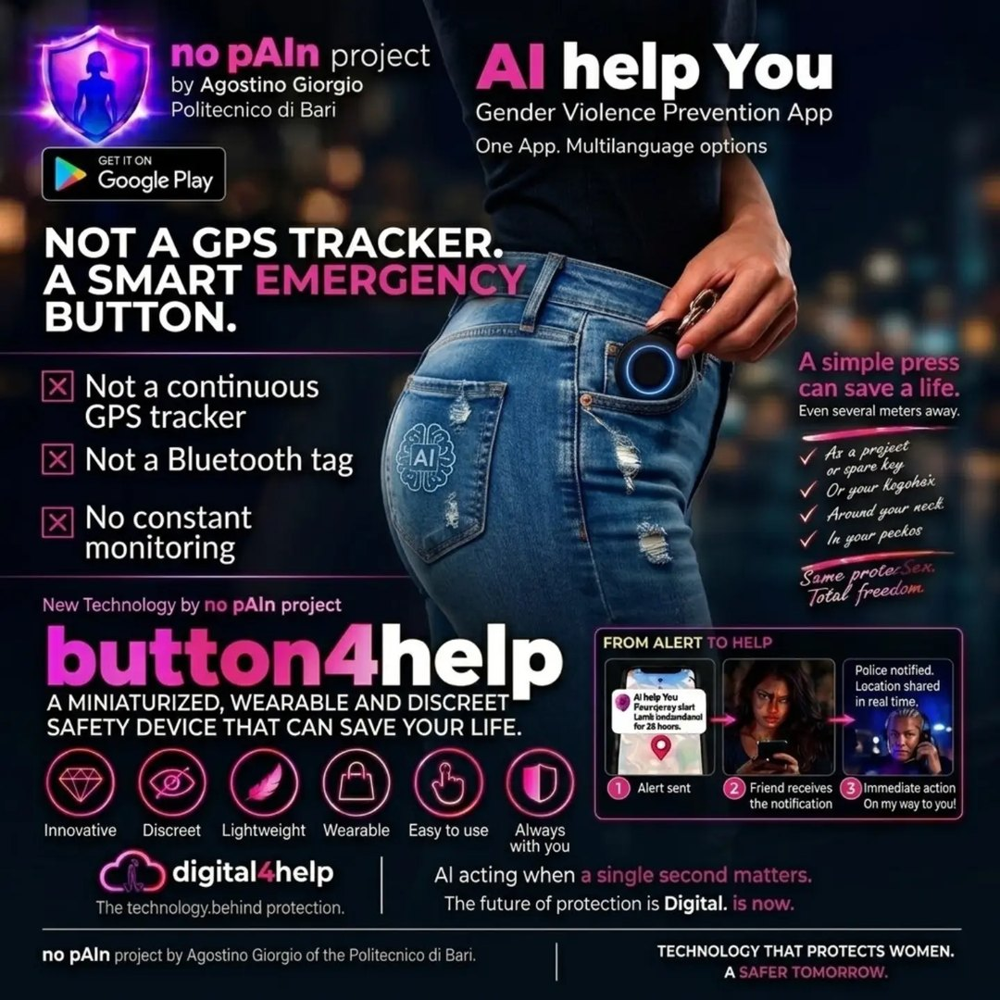
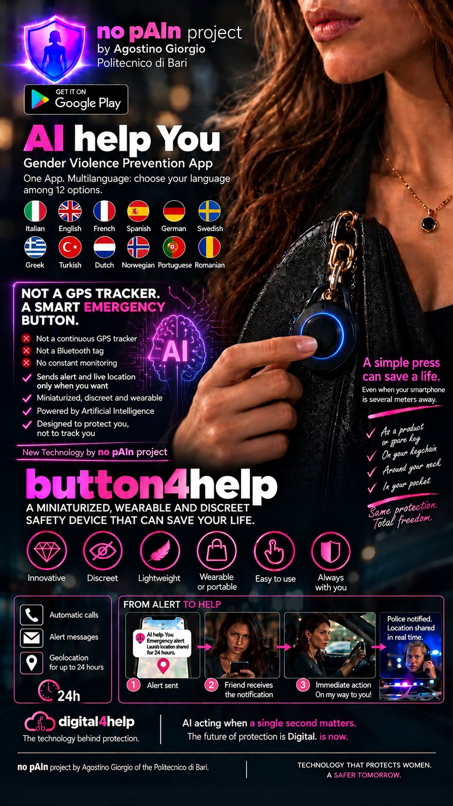
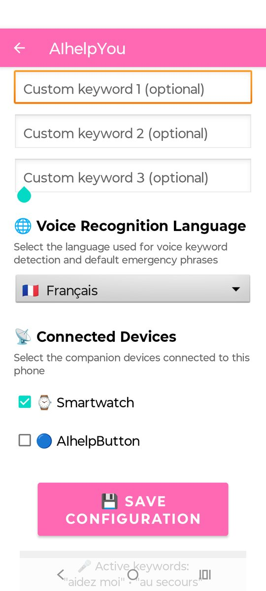
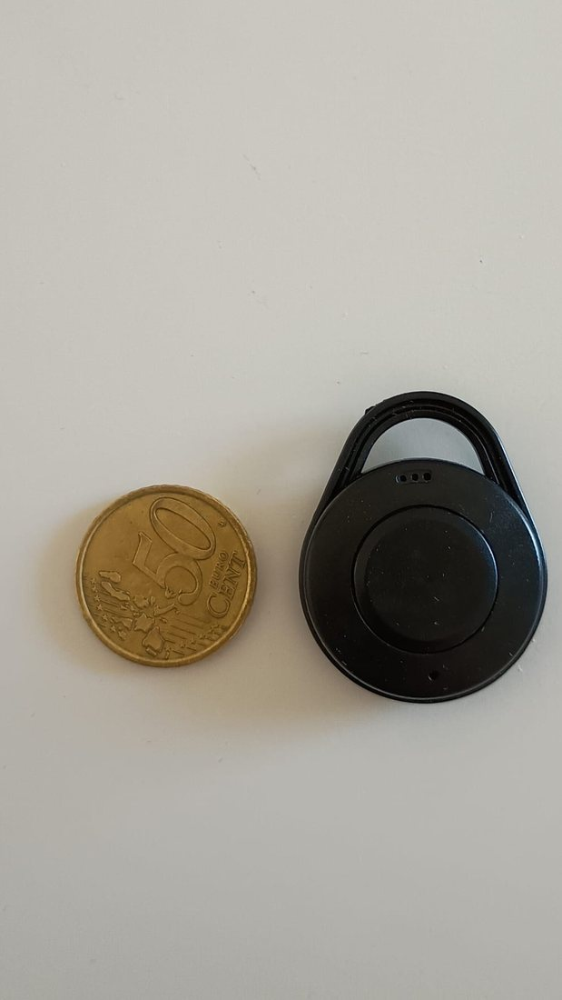

button4help™
Piccolo da portare, semplice da attivare. È il “pulsante magico” del progetto: lo tieni in tasca, in borsa o al portachiavi e, quando lo tieni premuto per un paio di secondi, l'app sul tuo smartphone avvia l'emergenza, anche a diversi metri di distanza.
Il pulsante non è venduto da no pAIn™: si compra da un rivenditore esterno e si abbina all'app.

Com'è e come si usa.
Lo tieni al portachiavi o in tasca. Quando serve, lo premi: l'app sul telefono avvia in automatico le richieste di aiuto e la posizione live verso i tuoi contatti.
Tocca un'immagine per ingrandirla.
{kind=link}

{kind=link}

{kind=link}
{kind=link}

{kind=link}

Un comando a distanza per il tuo telefono.
button4help™ è un pulsante che attiva procedure sullo smartphone entro la portata del Bluetooth. È miniaturizzato perché contiene solo un modulo Bluetooth Low Energy e una batteria a bottone: niente GPS, niente Wi-Fi. La posizione la ricava l'app sul telefono.
- Attivazione fisica senza impugnare il telefono
- Collegamento allo smartphone tramite Bluetooth
- Invio secondo le azioni configurate nell'app: messaggi, posizione, telefonate
- Attivazione
- Pressione di circa 2 secondi
- Connessione
- Solo Bluetooth BLE
- Portata
- Diversi metri, quella del Bluetooth
- Alimentazione
- Batteria a bottone
- Dimensioni
- Poco più di una moneta
- Funziona con
- AI help You (Android) e no pAIn™ (iPhone)
Non è un localizzatore. Non è un pulsante per anziani.
In commercio si trovano tracker GPS o Bluetooth che si collegano alla rete degli AirTag di Apple o a quella di Android, usati per ritrovare oggetti e animali. button4help™ è tutt'altra cosa.
| Dispositivo | A cosa serve | Come funziona |
|---|---|---|
| Tracker GPS o BLE | Ritrovare oggetti e animali | Si fa localizzare tramite la rete AirTag di Apple o quella di Android |
| Pulsante SOS per anziani | Chiamare un centro di assistenza | Dispositivo dedicato, spesso con SIM o base propria |
| button4help™ | Far scattare l'allarme dell'app no pAIn™ | Comando a distanza verso lo smartphone: parte l'emergenza con messaggi, posizione e chiamate ai tuoi contatti |
Tre passaggi, poi è sempre con te.
Acquistalo
Compra il pulsante dal rivenditore indicato qui sotto. Prezzo, spedizione e disponibilità dipendono dal venditore.
Abbinalo all'app
In AI help You o in no pAIn™ per iPhone, segui la procedura di abbinamento del manuale. Poi fai una prova concordata con i tuoi contatti.
Tienilo premuto
Quando serve, premi il pulsante per un paio di secondi: l'app avvia le azioni di emergenza che hai impostato.
Il pulsante comanda l'app sullo smartphone: il telefono deve essere acceso, entro la portata Bluetooth, con l'app configurata. Se ti serve un dispositivo che funzioni senza telefono, guarda AIuto SOS per Wear OS.
Dove acquistarlo
button4help™ si acquista su AliExpress, da un venditore terzo. no pAIn™ non vende il dispositivo e non gestisce ordini, spedizioni o resi.
Hai dubbi sulla compatibilità con il tuo telefono? Scrivici prima di acquistare.
La versione gioiello è già disponibile?
Le foto di questa pagina mostrano il dispositivo attuale. Le immagini promozionali con pendenti a cuore o altri gioielli illustrano possibilità di design: disponibilità e caratteristiche vanno confermate con il progettista.